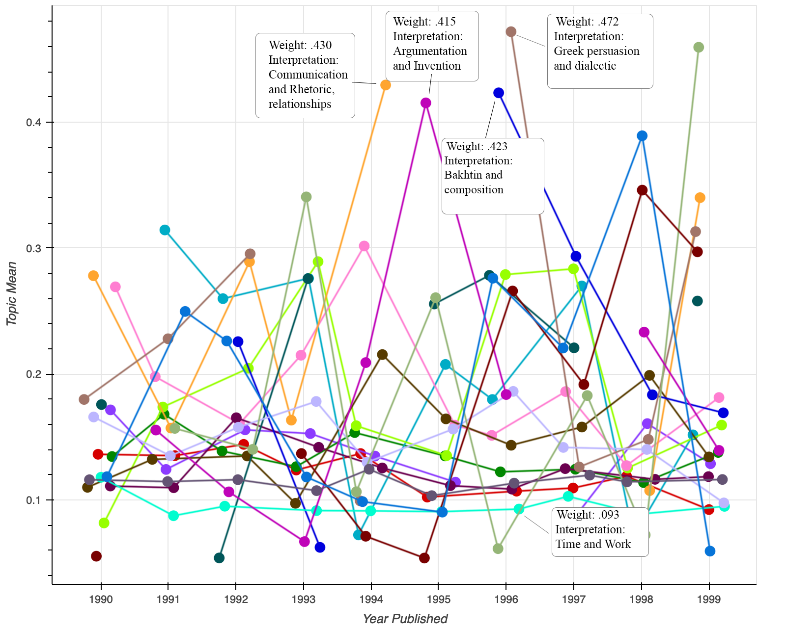

Tracing Techne: Impressions, Invention, and the Craft of Rhetoric
As a discipline we are currently wrestling with Generative AI (GenAI) and the effects of large language models on writing pedagogy and theory. When a machine learning algorithm creates a-rhetorical hallucinations, with a great deal of clarity, something that sounds and looks a lot writing, it begs the question what is writing? Combined with disciplinary pressures to claim expertise over a domain of knowledge, it is important to return to what we mean when we consider techne, oftentimes considered as the art and craft of rhetoric, and the relationships of techne to writing theory and practice. The end product, while important rhetorically, is not what writing is or is about. We value the thinking, learning, process, technology, social relationships, and cultures of writing. It is about how this activity is used and shared with other people. Historiographically interrogation techne suggests ways in which might start to re-situate processes and pedagogies in response to this moment.
In this webtext I trace the rhetorical concept of techne alongside mentions of invention through a corpus of rhetoric and composition field scholarship of the 1990s utilizing the digital humanities methods of topic modeling and data visualization. I undertook this project to explore intersections of creativity, invention, and text-technologies that emerged out of the 1990s and played a key role in recent approaches to digital rhetoric, multimodal composing, and circulation.
I’m interested in the 1990s for a four reasons. The first is the influx of computer technology into writing classrooms and the subsequent increase in scholarship. The second is the emergence of the World Wide Web and changes culturally and on writing. Our current GenAI moment parallels this technologization through networked and digital technologies.Third, I’m interested in the influence of the social turn of the 1980s on the 1990s. Lastly, is a disciplinary impulse in the 1990s in rhetoric and composition that led to the professionalization of journals and academic publication.

Underlying this project is an attention to data feminism and feminist rhetorical historiography. As a historiography this project traces impressions of techne in 1990s scholarship in order to recovery its history for rhetorical study. This project assumes that there are rhetorical actions that can be recovered through the uses of data, and that data can be used as a valuable historiographic intervention. This project also assumes that any recovery is a partial perspective. There is a careful feminist attention to power, language, and data within this project that aims to interrogate power within the scholarly record and within the data tools used to trace it. There is a critical attention, in this project to use data science methods with care in order to view differently.